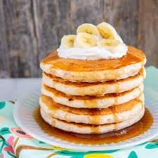

Whole Wheat Banana Pancakes

This batter makes fluffy pancakes perfect for a weekend morning. Versatile enough to be
made into belgian waffles as well. Just adjust the milk to 3/4 - 1 cup. Can be made vegan
by substituting plant based milk. Another variation of this pancake is to swap out the
mashed bananas for mashed sweet potato and add 2 tsp cinnamon.
Ingredients
- 1 cup whole wheat flour
- 1 cup of all-purpose flour
- 2 tsp baking powder
- 1/2 tsp salt
- 3 eggs
- 1 1/4 cups whole milk or unsweetened plant based milk
- 1 cup mashed ripe banana
- 4 T melted butter, cooled
Preparation
- In a large bowl, combine the flour, sugar, baking powder, cinnamon, and salt.
- In a separate bowl, whisk together the eggs, 1 cup of the milk, banana, and butter
- Add the wet ingredients to the dry and mix just until combined.
- If the batter is too thick, add the rest of the milk until the batter is thick, but
pourable. If your batter is too thin, the pancakes will be flat.
- Heat a large cast iron pan or griddle over medium-low heat. Add a small amount of oil to the pan
and swirl to coat. Pour the batter into the pan in desired size circles and cook until bubbles
form on the surface. Flip the cakes and cook until browned.
- Enjoy warm or freeze for later. Heat up 2 pancakes on a microwave safe plate
for 1:30 seconds.